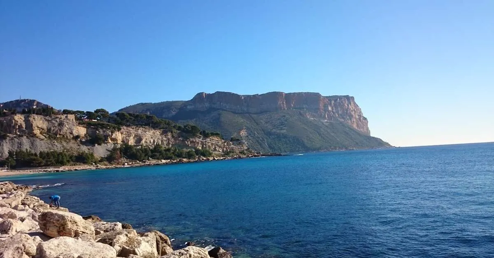
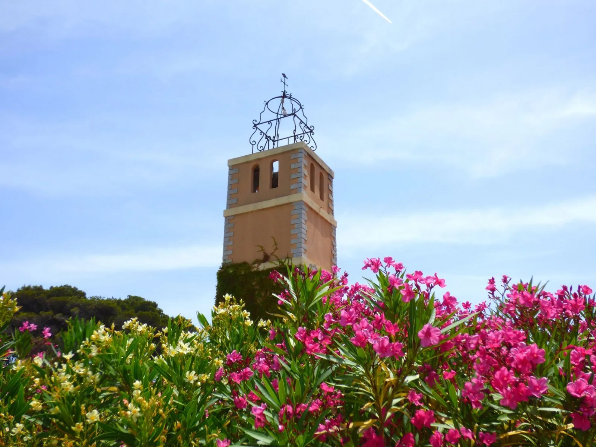
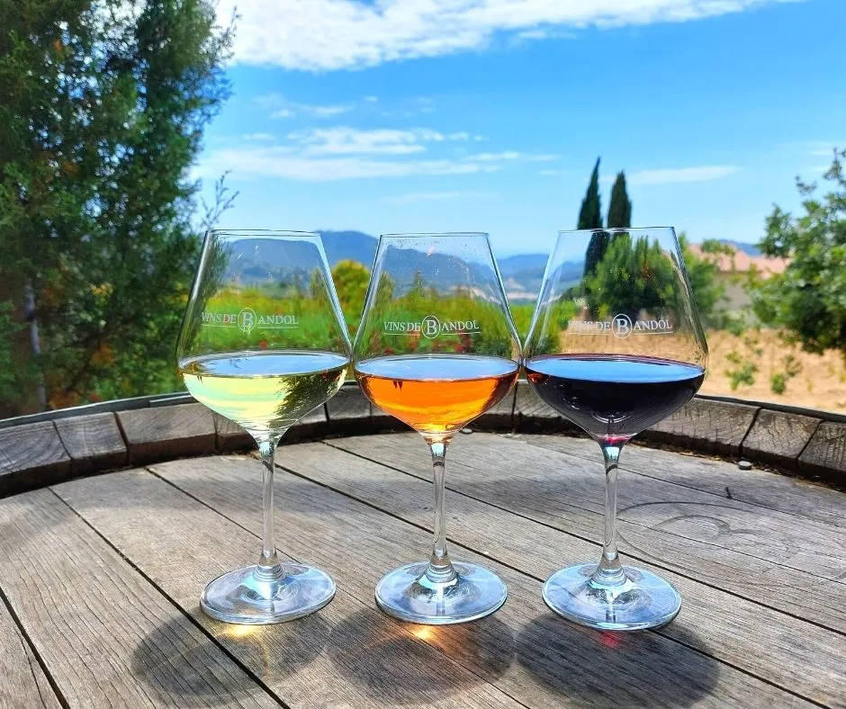
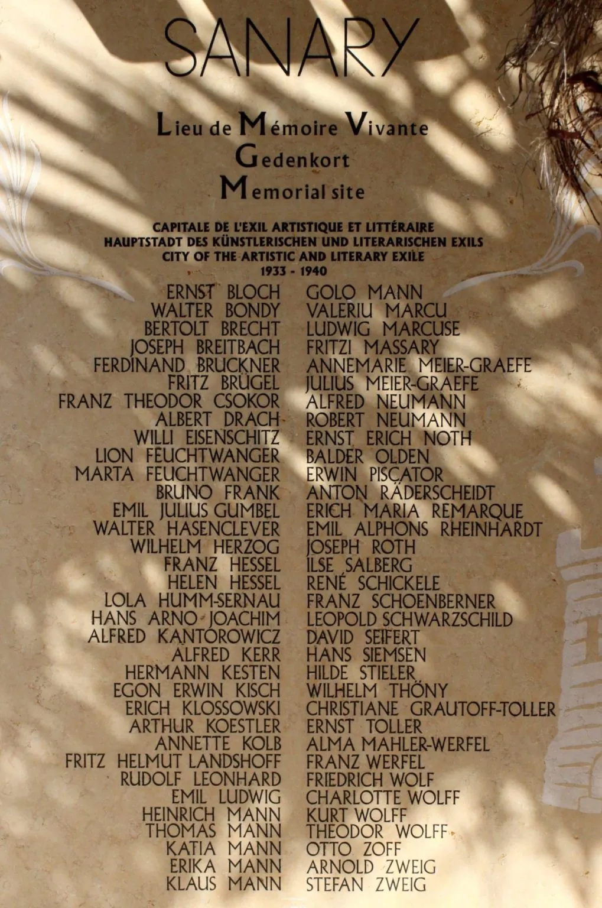
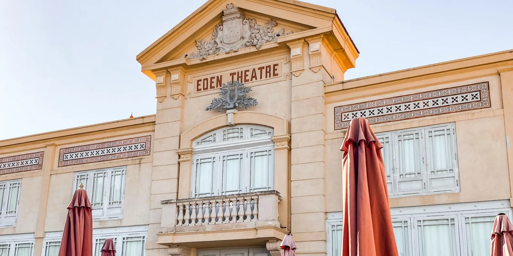
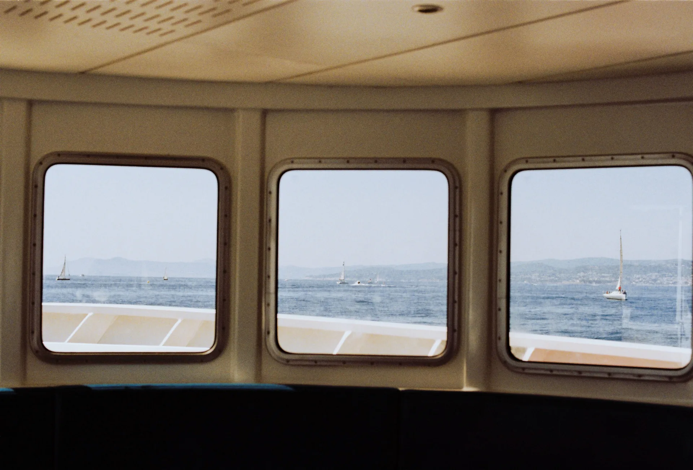
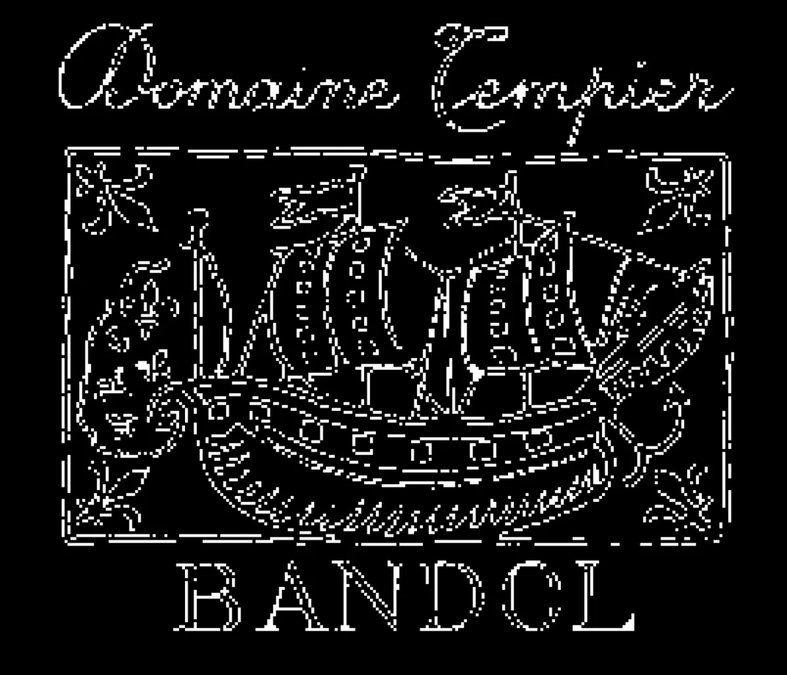
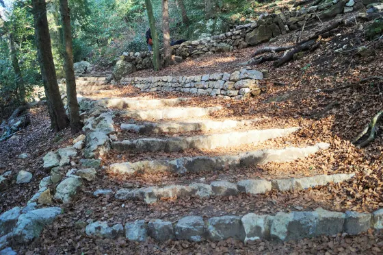
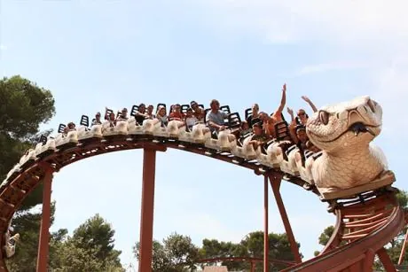
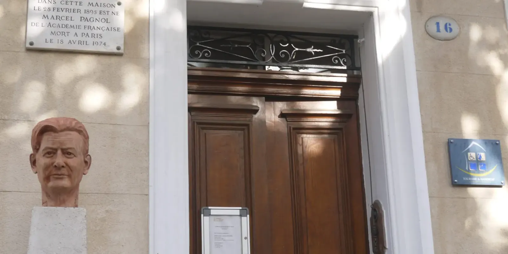

Greetings from the
30 km arc



Ports, plages & sea-light Six coastal half-days, ranked by character — ordered counter-clockwise from Bandol
FROM LE
CASTELLET

WATCH
THE FLAG
—1300
MARKET

TO ÎLE
VERTE

FINE PINK
SAND
CAR
FREE

The stamps that decide if you get in Four bureaucratic facts about Provence in 2026 — read them before you pack the swimsuit
Daily prefectural fire-risk colour, Jun–Sep. RED = full closure of Calanques massif AND auto-closure of the Cap Canaille / Route des Crêtes road.
Free QR booking required for Port-Miou / Port-Pin / En-Vau / Sugiton on 20–21 Jun, daily 27 Jun–30 Aug, plus weekends 5–6 and 12–13 Sep 2026. Opens 11 Jun, max 5 per slot.
Bandol & Cassis cellars — phone or online rendez-vous required at most domaines. Most close Sunday. Tasting often free on the implicit understanding you'll buy a bottle.
La Ciotat boats: 4 Apr–11 Nov. OK Corral: 4 Apr–1 Nov 2026. Aqualand: 20 Jun–6 Sep. Bendor shuttle: 1 May–1 Nov, every 30 min. Mont Faron téléphérique: Feb–Nov. Cassis boats: year-round.
By boat, by foot, by kayak Three ways into the same coves — pick by the flag and the legs
QUES
€21—33
—51
USE HANDS
LIAUTAUD
CASSIS
Greetings from the cellar Bandol AOC — Mourvèdre reds and salmon-pale rosés. Phone first; most don't open Sundays.
NO
WEEKEND

BY
APPT
VIGNERON
JUN–AUG
ORGANIC
SEA-FACING
STONE
TABLES
ALIS
FAMILY
From the hills, looking out Trails and drives — where the Mediterranean unrolls beneath you, and on a clear day, Corsica
FRANCE'S
HIGHEST
INSIDE
THE CAVE

BY
CAR
SÉRÉ DE
RIVIÈRES
SLIPPERY
SCREE
YARD TO
SEA
Stone and shutters Pagnol's Bakery's Wife, a 977 panorama, a Pierre Puget Virgin
BEAUX
VILLAGES
RECORD-
ED
VIRGIN
383 M
The Rade & the cable car The largest bay in Europe by water surface, the only cable car on the French Mediterranean coast
GLASS
FLOOR
DE
GAULLE
MONDAY
7:30—12:30
For the small humans Western theme park, water park, sand beaches, Pagnol's birthplace
FROM
CIRCUIT

FROM
HOTEL
BORN
HERE

HURACÁN
RICARD
The back of the postcard A weekend that works — written longhand, anchored on Saturday 19:30
SAT AMDrive 20 minutes down to Cassis & board the 8-calanques boat (1h50, €29) [14] — or, if the legs feel like it, hike Port-Miou → Port-Pin and swim.
SAT MIDIPicnic on Bestouan beach or quayside in Cassis port — fougasse, tapenade, a half-litre of cold rosé.
SAT PMBack to Le Castellet village — Maison des Vins de Bandol (a vigneron presents in person Jun–Aug) [34], ramparts walk, photo loop through Pagnol's bakery set.
SAT 19:30La Table du Castellet. The anchor.
SUN AMBooked rendez-vous at Pibarnon (Tempier closes Sundays!) — or up to Sainte-Baume & the Magdalene cave from Plan-d'Aups.
SUN MIDILunch in La Cadière-d'Azur — 5 km across the valley, the same vines from a different perched balcony.
SUN PMBeach day at Les Lecques + Aqualand for families [79] · culture day on Sanary's Parcours des Exilés [67] · rainy day, the Mont Faron téléphérique [85]. If today's flag is red, swap Cassis for Île des Embiez [74].
A weekend in Le Castellet, anchored on La Table du Castellet
The four-angle synthesis: Michelin Saturday dinner dictates lodging, taxi-range character lodging, day-trips inside 30 km, and the rare tech weekend that fits.
SIBLING · SURVEYWalking-distance lodging at or near La Table du Castellet
Only two hotels are genuinely walkable to dinner — the 5★ Relais & Châteaux (restaurant in the building) and the 3★ Grand Prix Hôtel 700 m down the same road.
SIBLING · SURVEYSpecial-character lodging within taxi range
Boutique and historic hotels within ~25 min taxi — from the on-site Relais & Châteaux to a Ducasse-restored 18th-c. abbey.
SIBLING · SURVEYIT conferences & tech events within 30 km
Toulon (~23 km) is the only meaningful tech hub — French Tech monthly meetups, ISEN hackathons, Pôle Mer maritime-AI events. Mostly Tue–Thu shaped; one weekend overlap.